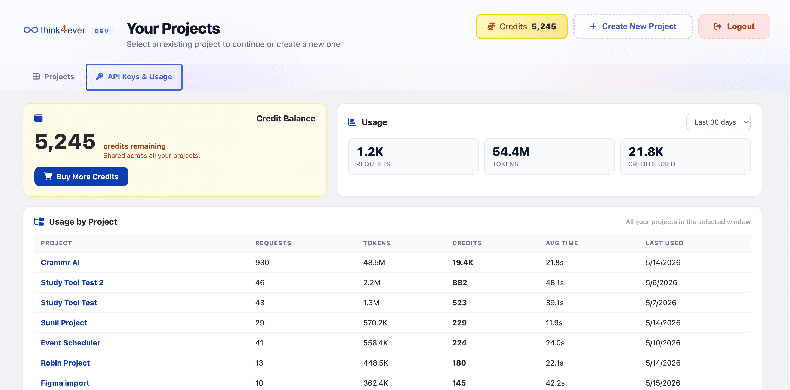
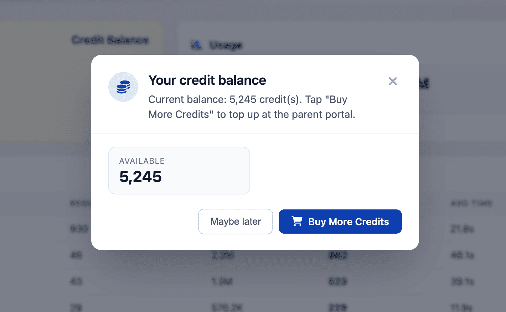

API Keys & Usage
The API Keys & Usage sub-tab provides a granular overview of resource allocation, active expenditures, and usage metrics across individual projects over a designated time window.

Global Balance & Summary Header
-
Credit Balance Card:
Displays your current overall reserve asset volume (8,116
credits remaining), which is shared dynamically across all
active project pipelines
- Click the blue Buy More Credits button to immediately add individual top-up credits to your account.
-
Global Usage Overview Panel:
Aggregates multi-project operational metrics for the
selected time range (e.g., Last 30 days dropdown filter):
- Requests: Total volume of pipeline calls executed (Sample Data: 797).
- Tokens: Absolute quantity of processing data parsed (19.5M).
- Credits Used: The equivalent billing credits consumed by those tokens (Sample data: 7.8K).
- Est. Cost Estimated financial translation of your total monthly consumption (Sample data: $129.27).
Usage by Project Ledger
This interactive data table itemizes execution metrics segmented by individual development environments inside the selected tracking window:
| Project | Requests | Tokens | Credits | Avg Time | Last Used |
|---|---|---|---|---|---|
| Vidanova Retail Lending Origination | 460 | 10.5M | 4.2K | 14.5s | 5d ago |
| Vidanova Retail Lending Origination | 301 | 7.7M | 3.1K | 12.7s | 5d ago |
| Vidanova Retail Lending Originate | 34 | 1.3M | 518 | 32.2s | 5d ago |
| First Topup Project | 2 | 60.3K | 25 | 1.4m | 6d ago |
Daily Usage Time-Series Chart
Located at the base of the console, the Daily Usage bar chart visualizes day-over-day token consumption scaling over time. Hovering over individual time nodes (e.g., 5/13) reveals specific model clusters or background agent processing instances (e.g., claude-cpus...) driving your usage peaks.
Credit Purchase Modal Overlays
When a user attempts to add funds or interacting with a low-balance alert from within a project development view, the system handles the purchase flow using modal overlays. This allows users to quickly replenish resources without breaking their current development workflow context.

Credit Balance Warning / Status Modal
This pop-up overlay triggers as a prompt when reviewing usage logs or when the system detects a balance check action:
- Header Elements: Features a quick-glance credit coin icon next to the title text context "Your credit balance". A close button (✕) is placed in the top right to let users dismiss the window immediately.
- Status Message Description: Explicitly details the parent workspace's real-time financial health status ("Current balance: 8,116 credit(s). Tap 'Buy More Credits' to top up at the parent portal.").
- Available Metrics Block: Displays your exact runtime credit volume ready for consumption inside a bold callout container box (Sample Data: 8,116 AVAILABLE).
-
Action Footer Toggles
- Maybe later Button: Dismisses the overlay prompt window and returns the user to their active background project view screen.
- Buy More Credits Button: A solid blue action item that redirects the user instantly to the payment execution or package selection drawer to finalize a manual overage transaction.